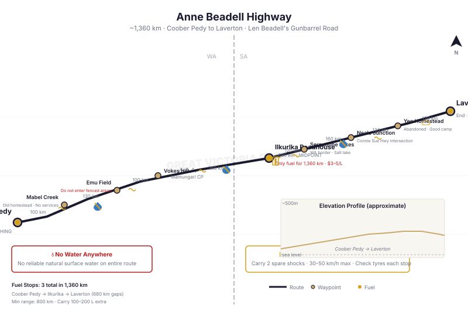

📑 Contents
Anne Beadell Highway — Map & Track Reference

Anne Beadell Highway — waypoints, fuel stops, and distances (approx. 1,360 km Coober Pedy to Laverton)The Anne Beadell Highway is one of Australia's most remote and challenging desert tracks, running 1,360 km from Coober Pedy in South Australia to Laverton in Western Australia. Built between 1953 and 1962 by Len Beadell's Gunbarrel Road Construction Party, the route crosses the Great Victoria Desert through SA's Mamungari Conservation Park into WA's Great Victoria Desert Nature Reserve.
The Anne Beadell is known for having some of the worst corrugations in Australia — a reputation well earned. Between the isolation, extreme corrugations, and limited fuel stops, this is a serious undertaking for experienced outback travellers only.
Key Facts
| Attribute | Detail |
|---|---|
| Location | Coober Pedy (SA) to Laverton (WA) |
| Distance | ~1,360 km |
| Terrain | Flat gibber plains, sand dunes, mulga scrub, claypans |
| Typical duration | 5–8 days |
| Best season | April–September |
| Fuel stops | 3 (Coober Pedy, Ilkurlka, Laverton) |
| Mobile reception | Zero |
| History | Built 1953–1962 by Len Beadell's Gunbarrel Road Construction Party for the Woomera rocket range |
History
The Anne Beadell Highway was named after Len Beadell's wife. It was the first of the Gunbarrel roads built to support the Woomera rocket testing range — specifically to access the Emu Field nuclear test site and a proposed rocket tracking station at Vokes Hill.
- 1953: Construction begins from the Stuart Highway (SA) westward
- 1962: Route completed to the WA border
- 1960s–1970s: Used for mining exploration and Aboriginal community access
- Present: Remote 4WD track maintained intermittently by DBCA
Key Waypoints
| Waypoint | Coordinates (WGS84) | Notes |
|---|---|---|
| Coober Pedy | 29°00'00"S, 134°45'00"E | Start. Fuel, water, last proper supplies for the next 1,360 km. |
| Mabel Creek | 28°59'00"S, 133°30'00"E | Old homestead. No services. |
| Emu (Field) | 28°41'00"S, 132°10'00"E | Former nuclear test site (British tests 1953). Restricted area. Do not enter fenced areas. |
| Vokes Hill | 28°35'00"S, 130°35'00"E | Corner of Anne Beadell and Mabel Creek track. |
| Mulyawara | 28°38'00"S, 129°30'00"E | Aboriginal community. Limited access. |
| Mamungari Conservation Park entry | 28°35'00"S, 129°00'00"E | SA permit check. |
| Ilkurlka Roadhouse | 28°10'00"S, 126°25'00"E | The middle point. Only fuel between Coober Pedy and Laverton. |
| Serpentine Lakes | 28°10'00"S, 125°30'00"E | WA border. Salt lake. |
| Neale Junction | 28°15'00"S, 124°15'00"E | Intersection of Anne Beadell Highway and the Connie Sue Highway. |
| Yeo Homestead | 28°15'00"S, 122°30'00"E | Abandoned homestead. Good camp. |
| Laverton | 28°37'00"S, 122°24'00"E | End. Fuel, supplies. |
Fuel
| Location | Distance from Coober Pedy | Fuel Type | Notes |
|---|---|---|---|
| Coober Pedy | 0 km | All | Fill EVERYTHING. Last reliable supply. |
| Ilkurlka Roadhouse | ~680 km | Diesel, ULP | Only fuel stop on the route. Expensive ($3–5/L). Limited hours. Call ahead. CAN RUN OUT. |
| Laverton | ~1,360 km | Diesel, ULP | Full services at western end. |
That's it. Three fuel points for 1,360 km. The gap from Coober Pedy to Ilkurlka is ~680 km. The gap from Ilkurlka to Laverton is another ~680 km.
Fuel range required: Minimum 800 km safe range. Carry a minimum of 100 L extra beyond your main tank. Most experienced travellers carry 150–200 L extra.
Water
| Source | Location | Notes |
|---|---|---|
| Coober Pedy | Start | Full water fill |
| Ilkurlka Roadhouse | Midpoint | Limited. Ask at roadhouse. Do not rely on it. |
| Natural surface water | None | No reliable natural surface water anywhere on the route. |
| Carry ALL water | — | 8 L/person/day minimum × 8 days = 64 L/person minimum. |
Permits
| Permit | Issuing Authority | Cost (2025) | Notes |
|---|---|---|---|
| Mamungari Conservation Park Permit | SA Department for Environment | ~$40/vehicle | Required for the SA section. Available online or at Coober Pedy Visitor Centre. |
| WA DBCA (Great Victoria Desert Nature Reserve) Permit | WA DBCA | ~$30/vehicle | Required for the WA section. Apply online. |
| Maralinga Tjarutja Land Access Permit | Maralinga Tjarutja Council, Ceduna | $50–100 | Required if route passes through Maralinga Tjarutja Aboriginal land. Apply weeks in advance. |
| Ilkurlka Community | Contact Ilkurlka Roadhouse | Free–$20 | Courtesy call/payment for using the roadhouse fuel stop. |
Apply early: Maralinga Tjarutja permits can take 2–4 weeks to process. Plan accordingly.
Best Season
- Optimal: April through September
- Day temperatures 18–30°C
- Night temperatures 2–10°C
- Cool enough for comfortable travel
-
Lower water consumption
-
Marginal: March and October
- Can reach 38°C+ by mid-afternoon
-
Start at dawn, stop by midday
-
Avoid: November through February
- Daytime temperatures 42–50°C
- Extreme dehydration risk
- No margin for breakdown
- Do not travel the Anne Beadell in summer
Hazards
| Hazard | Details | Mitigation |
|---|---|---|
| Extreme corrugations | Widely considered the worst corrugations on any Australian track. Can shake a vehicle to pieces. | Reduce speed to 30–50 km/h. Check shock absorbers every stop. Carry spare shocks. Tyre pressure 25–30 PSI. |
| Sharp rocks and spinifex | Spinifex hummocks and quartzite gibbers cause punctures. | 10-ply tyres. 2+ spares. Tyre plug kit. Inspect tyres each stop. |
| Isolation | 200+ km between any sign of civilisation. | PLB mandatory. Sat phone essential. HF radio recommended. |
| Mulga scrub | Dense mulga narrows the track, scratches paint, hides sharp stumps. | Drive slowly. Protect radiator and headlights with mesh. |
| No water | No surface water. None. | Carry ALL water. |
| Navigation | Route can be faint where sand drifts over the track. | GPS + paper map (Westprint Map 7 Anne Beadell Highway). |
| Claypans (wet) | If wet, claypans become impassable bog. | Check BOM before departure. Do not drive on wet clay. |
| Dust | Fine bulldust holes on some sections — invisible until you hit them. | Walk questionable sections. Reduce speed. |
Communications
| Method | Coverage | Notes |
|---|---|---|
| Mobile phone | Zero | No coverage anywhere along the route. |
| Satellite phone | Full | Essential. Iridium recommended. |
| PLB | Emergency | Mandatory. Carry in cab. |
| UHF CB | Line-of-sight | Useful for convoy. Channel 40. |
| HF Radio | Good | VKS-737 network specifically recommended for the Anne Beadell. The Anne Beadell passes through areas near the VKS-737 base in Meekatharra, making HF a practical secondary comms method. |
Vehicle Preparation
| Item | Recommendation |
|---|---|
| Tyres | 10-ply light truck minimum. 2+ spares. |
| Shock absorbers | Heavy-duty. Carry 2 spare shock absorbers — you will likely need them |
| Suspension | Upgraded springs recommended. Standard suspension may fail. |
| Long range fuel | 150 L+ main tank strongly recommended |
| Extra fuel | 100–200 L in jerry cans |
| Snorkel | Prevents dust ingress. Essential for corrugation dust. |
| Radiator protection | Mesh screen over front grille. |
| Headlight protection | Clear film or mesh covers. Mulga will crack housings. |
| Tools | Full tool kit including spare belts, hoses, electrical repair kit. |
Typical Itinerary (6–8 days, Coober Pedy to Laverton)
| Day | Camp / Stop | Notes |
|---|---|---|
| 1 | Coober Pedy → Near Emu area | Leave early. Fuel at Coober Pedy. |
| 2 | Emu area → Mamungari entry | Enter conservation park. Check permit. |
| 3 | Mamungari → Serpentine Lakes | Open plains, multiple dune crossings. |
| 4 | Serpentine Lakes → Ilkurlka Roadhouse | Midpoint. Refuel. Rest day. |
| 5 | Ilkurlka → Near Neale Junction | Entering WA. |
| 6 | Neale Junction → Yeo Homestead | Good campsite at Yeo. |
| 7 | Yeo Homestead → Laverton | Final stretch. Fuel at Laverton. |
Related Pages
- Outback 4WD Survival — General outback survival principles
- Route Planning — Fuel calculations, permit planning
- What to Carry — Comprehensive outback gear checklist
- Vehicle Breakdown — Stay or go decision framework
- Bush Mechanics — Corrugation damage repairs
- Vehicle as a Resource — Using the vehicle for survival
Vehicle Requirements
| Requirement | Minimum | Recommended |
|---|---|---|
| Tyres | LT 10-ply all-terrain (MANDATORY — spinifex punctures are constant) | 10-ply mud-terrain |
| Spare tyres | 2 minimum on rims + full repair kit + tyre pliers | 3 on rims |
| Fuel range | 800 km loaded range minimum (Coober Pedy to Laverton via Ilkurlka) | 1,000 km — Ilkurlka fuel is NOT guaranteed |
| Snorkel | Recommended (dust) | Essential |
| Suspension | Heavy duty (the corrugations are BRUTAL) | 2\" lift, upgraded shocks (standard shocks overheat and fade on Anne Beadell corrugations) |
| Recovery gear | 2 x spares on rims, full repair kit, winch or Tirfor hand winch, exhaust jack, snatch strap, Maxtrax | Full recovery kit. Nearest help may be 500 km away. |
| Water | 10L per person per day × 8 days. No natural water anywhere. | 10L × 10 days |
| Communications | PLB mandatory. Sat phone strongly recommended. | PLB + sat phone + HF radio. No UHF range. No mobile reception — anywhere. |
| Trailer suitability | NOT recommended. Extreme corrugations destroy trailers and their contents. | Heavy-duty off-road trailer only. Expect damage. |
| Vehicle type | Heavy-duty 4WD with excellent reliability. Anne Beadell is remote even by outback standards. | Toyota LandCruiser, Nissan Patrol. NOT suitable for: soft-roaders, AWD, light-duty utes. |
Campsite Guide
East-to-West (6–8 days recommended)
| Night | Campsite | GPS | Facilities | Notes |
|---|---|---|---|---|
| 0 | Coober Pedy | -29.0130, 134.7550 | Full town services, supermarket, fuel, mechanic | Fill EVERYTHING. Last reliable everything for 1,360 km. |
| 1 | Mabel Creek | -28.8700, 133.4500 | Ruins, bush camping, NO water | ~200 km. Old station ruins. |
| 2 | Emu / Mamungari CP east | -28.6500, 131.2000 | Bush camping, NO water | ~200 km. Anne's Corner nearby. Entry to Mamungari Conservation Park. |
| 3 | Serpentine Lakes area | -28.4500, 129.2000 | Bush camping, NO water. Dry salt lakes. | ~200 km. Halfway-ish. Remote — nearest help is Ilkurlka. |
| 4–5 | Ilkurlka Roadhouse | -28.3090, 128.0650 | Fuel (limited, expensive, PHONE AHEAD), basic supplies, accommodation (basic), camping, NO reliable water | RESUPPLY POINT. Rest day. Repairs. Check fuel availability before leaving Coober Pedy. |
| 6 | Neale Junction | -28.1300, 126.6400 | Bush camping, NO water. Junction of Anne Beadell / Connie Sue Highways. | ~200 km. Historic junction. |
| 7 | Yeo Homestead / Laverton approach | -28.1250, 124.7500 | Ruins, bush camping, NO water | ~200 km. Old station ruins. Last night on the track. |
| 8 | Laverton | -28.6270, 122.4030 | Fuel, basic supplies, pub | END. |
Camping notes: - NO water anywhere on the Anne Beadell Highway. Carry ALL water for the entire crossing + 2 days spare. - Fires: scarce fuel. Carry gas stove. Firewood is sparse in the Great Victoria Desert. - Corrugations are exhausting. Set up camp early if fatigued. Driving tired on corrugations causes accidents. - Temperatures: desert nights cold in winter (near 0°C). Days cool to warm (15-25°C winter, 40°C+ summer). - Do NOT camp on the track. Pull well off. Road trains and other vehicles use this road.
GPS Waypoints
All coordinates WGS84 datum.
Major Waypoints (East to West)
| Location | Latitude | Longitude | Notes |
|---|---|---|---|
| Coober Pedy | -29.0130 | 134.7550 | Eastern terminus, fuel, supermarket, opal mining town |
| Mabel Creek | -28.8700 | 133.4500 | Ruins, basic campsite |
| Emu (former township) | -28.8200 | 132.4800 | Historic site, Woomera-era ruins |
| Emu Airfield | -28.7100 | 132.2300 | Abandoned airstrip |
| Anne\'s Corner | -28.6500 | 131.2000 | Named by Len Beadell after his wife |
| Ilkurlka Roadhouse | -28.3090 | 128.0650 | CRITICAL midpoint — fuel (limited, expensive), basic supplies, accommodation. Check availability before trip. |
| Serpentine Lakes | -28.4500 | 129.2000 | Dry salt lakes |
| Mamungari Conservation Park boundary (east) | -28.6000 | 131.5000 | Permit zone entry |
| Mamungari Conservation Park boundary (west) | -28.4000 | 129.5000 | Permit zone exit |
| SA/WA Border | -28.2800 | 128.9900 | State border marker, photo stop |
| Neale Junction | -28.1300 | 126.6400 | Anne Beadell Highway / Connie Sue Highway junction |
| Yeo Homestead | -28.1250 | 124.7500 | Historic station ruins |
| Laverton | -28.6270 | 122.4030 | Western terminus, fuel, basic supplies |
Fuel Stops
| Location | Latitude | Longitude | Distance from Previous |
|---|---|---|---|
| Coober Pedy | -29.0130 | 134.7550 | Start — fill everything |
| Ilkurlka Roadhouse | -28.3090 | 128.0650 | ~770km — PHONE AHEAD, carry spare |
| Laverton | -28.6270 | 122.4030 | ~560km from Ilkurlka |
Critical Notes
- No water anywhere along the entire 1,360km route — carry ALL water
- Ilkurlka is the ONLY fuel between Coober Pedy and Laverton
- If Ilkurlka is out of fuel, you need minimum 770km range to reach Laverton from Coober Pedy
- SA Desert Parks Pass required for Mamungari Conservation Park section
- Maralinga Tjarutja permit required for Aboriginal land transit
Free Topographic Map Downloads
Geoscience Australia provides free 1:250,000 scale topographic maps of the entire continent under a CC BY 4.0 licence. These are the same maps used by emergency services, park rangers, and experienced outback travellers.
How to Download
Step 1: Go to the Geoscience Australia Product Catalogue
Step 2: Search for the map sheet code (e.g., "SH53-08") in the search box
Step 3: Click the result, then click Download (PDF, 3–8MB per sheet)
Relevant 1:250K Map Sheets
| Map Sheet | Code | Coverage |
|---|---|---|
| Coober Pedy | SH53-08 | Eastern terminus, Coober Pedy, opal fields |
| Tallaringa | SH53-06 | Mabel Creek, Tallaringa Conservation Park |
| Birksgate | SH52-15 | Emu, Mamungari Conservation Park |
| Lindsay | SH52-12 | Serpentine Lakes, Mamungari CP south |
| Rason | SH52-13 | Ilkurlka Roadhouse, Great Victoria Desert |
| Lake Giles | SH52-09 | Neale Junction, eastern WA |
| Laverton | SH51-02 | Western terminus, Laverton, Goldfields |
Offline Mapping Apps (No Internet Needed)
For smartphone/tablet navigation without mobile reception:
- OsmAnd — Free offline maps using OpenStreetMap data. Download state maps before your trip. Works entirely offline with GPS.
- Avenza Maps — Free app. Load GeoPDF topo maps from Geoscience Australia (downloaded via the catalogue above). GPS works offline.
- ExplorOz Traveller — Australia-specific 4WD navigation. Paid app but designed for outback use. Offline maps included.
Paper Maps (Essential Backup)
Always carry paper maps. Electronics fail in heat, dust, and corrugations.
| Map | Publisher | Coverage |
|---|---|---|
| Hema Great Desert Tracks — Central | Hema Maps | 1:250K — Detailed track map with fuel stops, campsites, POIs |
| Westprint Great Victoria Desert | Westprint Maps | 1:1M — Overview map with historical notes and track conditions |
Key Notes
- All GA maps use GDA94/WGS84 datum — fully compatible with GPS
- Print at 100% scale (A1 or A0 paper) for readable detail
- Carry hard copies — they do not require batteries or signal
- GA maps are CC BY 4.0 — free to download, use, share, and print commercially